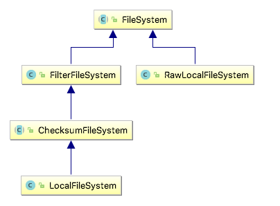

Hadoop: The Definitive Guide 5 - Hadoop I/O¶
1 Data Integrity¶
The usual way of detecting corrupted data is by computing a checksum(校验和) for the data when it first enters the system, and again whenever it is transmitted across a channel that is unreliable and hence capable of corrupting the data.
A commonly used error-detecting code is CRC-32 (32-bit cyclic redundancy check, 循环冗余校验), which computes a 32-bit integer checksum for input of any size. CRC32 is used for checksumming in Hadoop's
Data Integrity in HDFS¶
HDFS transparently checksums all data written to it and by default verifies checksums when reading data. A separate checksum is created for every
Datanodes are responsible for verifying the data they receive before storing the data and its checksum. When clients read data from datanodes, they verify checksums as well.
In addition to block verification on client reads, each datanode runs a
You can find a file’s checksum with
LocalFileSystem¶
The Hadoop
ChecksumFileSystem¶
FileSystem rawFs = ... FileSystem checksummedFs = new ChecksumFileSystem(rawFs);

2 Compression¶
File compression brings two major benefits: it reduces the space needed to store files, and it speeds up data transfer across the network or to or from disk. When dealing with large volumes of data, both of these savings can be significant.
A summary of compression formats:
| Compression format | Tools | Algorithm | File Extension | CompressionCodec | Splittable? |
|---|---|---|---|---|---|
| DEFLATE | N/A | DEFLATE | .deflate | DefaultCodec | No |
| gzip | gzip | DEFLATE | .gz | GzipCodec | No |
| bzip2 | bzip2 | bzip2 | .bz2 | BZip2Codec | Yes |
| LZO | lzop | LZO | .lzo | LzoCodec | No |
| Snappy | N/A | Snappy | .snappy | SnappyCodec | No |
All compression algorithm exhibit a space/time trade-off. Splittable compression formats are especially suitable for MapReduce.
Codecs¶
A codec is the implementation of a compression-decompression algorithm. In Hadoop, a codec is represented by an implementation of the
- To compress data being written to an output stream, use the
createOutputStream(OutputStream out) method to create aCompressionOutputStream - Conversely, to decompress data being read from an input stream, call
createInputStream(InputStream in) to obtain aCompressionInputStream .
The code below illustrates how to use the API to compress data read from standard input and write it to standard output.
import org.apache.hadoop.conf.Configuration; import org.apache.hadoop.io.IOUtils; import org.apache.hadoop.io.compress.CompressionCodec; import org.apache.hadoop.io.compress.CompressionOutputStream; import org.apache.hadoop.util.ReflectionUtils; // vv StreamCompressor public class StreamCompressor { public static void main(String[] args) throws Exception { String codecClassname = args[0]; Class<?> codecClass = Class.forName(codecClassname); Configuration conf = new Configuration(); CompressionCodec codec = (CompressionCodec) ReflectionUtils.newInstance(codecClass, conf); CompressionOutputStream out = codec.createOutputStream(System.out); IOUtils.copyBytes(System.in, out, 4096, false); out.finish(); } }
We can try it out with the following command line, which compresses the string “Text” using the
export HADOOP_CLASSPATH=/Users/larry/JavaProject/out/artifacts/StreamCompressor/StreamCompressor.jar echo "Text" | hadoop com.definitivehadoop.compression.StreamCompressor org.apache.hadoop.io.compress.GzipCodec | gunzip
If you are using a native library and you are doing a lot of compression or decompression in your application, consider using
Compression and Input Splits¶
If a compressed file using a format that does not support splitting, say gzip format, MapReduce will not try to split the gzipped file, at the expense of locality: a single map will process all blocks containing the file, most of which will not be local to the map.
For an LZO file, in spite of not supporting splitting, it is possible to preprocess LZO files using an indexer tool that comes with the Hadoop LZO libraries.
Using Compression in MapReduce¶
In order to compress the output of a MapReduce, job you can use the static convenience methods on
Application to run the maximum temperature job producing compressed output:
public class MaxTemperatureWithCompression { public static void main(String[] args) throws Exception { if (args.length != 2) { System.err.println("Usage: MaxTemperatureWithCompression <input path> " + "<output path>"); System.exit(-1); } Job job = Job.getInstance(); job.setJarByClass(com.definitivehadoop.weatherdata.MaxTemperature.class); FileInputFormat.addInputPath(job, new Path(args[0])); FileOutputFormat.setOutputPath(job, new Path(args[1])); job.setOutputKeyClass(Text.class); job.setOutputValueClass(IntWritable.class); /*[*/ FileOutputFormat.setCompressOutput(job, true); FileOutputFormat.setOutputCompressorClass(job, GzipCodec.class);/*]*/ job.setMapperClass(com.definitivehadoop.weatherdata.MaxTemperatureMapper.class); job.setCombinerClass(com.definitivehadoop.weatherdata.MaxTemperatureReducer.class); job.setReducerClass(com.definitivehadoop.weatherdata.MaxTemperatureReducer.class); System.exit(job.waitForCompletion(true) ? 0 : 1); } } //^^ MaxTemperatureWithCompression
$ export HADOOP_CLASSPATH=/Users/larry/JavaProject/out/artifacts/MaxTemperatureWithCompression/MaxTemperatureWithCompression.jar $ hadoop com.definitivehadoop.compression.MaxTemperatureWithCompression /Users/larry/JavaProject/resources/HadoopBook/ncdc/sample.txt output
3 Serialization¶
See concepts of serialization and deserialization in Head First Java Chapter 14 .
Serialization is the process of turning structured objects into a byte stream for transmission over a network or for writing to persistent storage. Deserialization is the reverse process of turning a byte stream back into a series of structured objects.
Serialization is used in two quite distinct areas of distributed data processing: for interprocess communication and for persistent storage.
In Hadoop, interprocess communication between nodes in the system is implemented using remote procedure calls (RPCs). The RPC protocol uses serialization to render the message into a binary stream to be sent to the remote node, which then deserializes the binary stream into the original message. In general, four desirable properties are crucial for an RPC serialization and persistent storage:
| Properties | PRC Serialization | Persistent Storage |
|---|---|---|
| Compact | makes the best use of network bandwidth | make efficient use of storage space |
| Fast | little performance overhead | little overhead in reading or writing |
| Extensible | meet new requirements | transparently read data of older formats |
| Interoperable | support clients written in different languages | read/write using different languages |
Hadoop uses its own serialization format,
The Writable Interface¶
The
package org.apache.hadoop.io; import java.io.DataOutput; import java.io.DataInput; import java.io.IOException; public interface Writable { void write(DataOutput out) throws IOException; void readFields(DataInput in) throws IOException; }
Writable Classes¶
There are
When it comes to encoding integers, there is a choice between the fixed-length formats (
Indexing for the
Another difference from
Text t = new Text("hadoop"); t.set("pig");
Text("hadoop").toString()
Implementing a Custom Writable¶
Tip
If you are considering writing a custom
Serialization Frameworks¶
Any type can be used to serialize, because Hadoop has an API for pluggable serialization frameworks, which is represented by an implementation of
public class WritableSerialization extends Configured implements Serialization<Writable> public abstract class AvroSerialization<T> extends Configured implements Serialization<T>
A
public interface Serialization<T> { // Allows clients to test whether this Serialization // supports the given class. boolean accept(Class<?> c); // @return a {@link Serializer} for the given class. Serializer<T> getSerializer(Class<T> c); //return a {@link Deserializer} for the given class. Deserializer<T> getDeserializer(Class<T> c); }
Note
Although it makes it convenient to be able to use standard Java types such as
Apache Thrift and Google Protocol Buffers are both popular serialization frameworks, and both are commonly used as a format for persistent binary data. Avro is an IDL-based serialization framework designed to work well with large-scale data processing in Hadoop.
4 File-Based Data Structures¶
For some applications, you need a specialized data structure to hold your data. For doing MapReduce-based processing, putting each blob of binary data into its own file doesn’t scale, so Hadoop developed a number of higher-level containers for these situations.
SequenceFile¶
Hadoop’s
To create a
The hadoop
% hadoop fs -text numbers.seq | head
A sequence file(顺序文件) consists of a header followed by one or more records. The sync marker(同步标识) is used to allow a reader synchronize to a record boundary from any position in the file, which incurs less than a 1% storage overhead.

The internal format of the records depends on whether compression is enabled, and if it is, whether it is record compression(记录压缩) or block compression(块压缩).
The format for record compression is almost identical to that for no compression, except the value bytes are compressed using the codec defined in the header. Note that keys are not compressed.

Block compression compresses multiple records at once; it is therefore more compact than and should generally be preferred over record compression because it has the opportunity to take advantage of similarities between records. A sync marker is written before the start of every block. The format of a block is a field indicating the number of records in the block, followed by four compressed fields: the key lengths, the keys, the value lengths, and the values.
MapFile¶
A